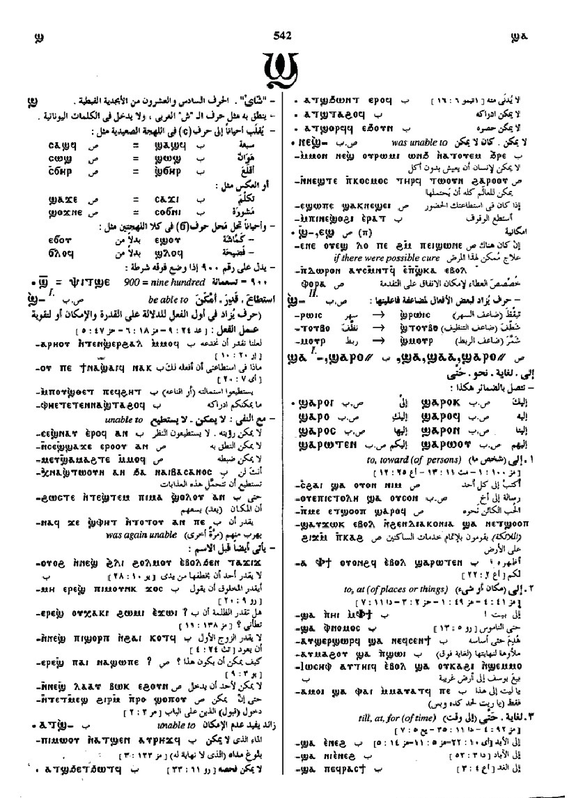

(preposition)
to, toward of persons [προσ]
to, at of places, things
till, at, by, for of time
up to, to length of in reckonings
except S,B
to, at of places, things
till, at, by, for of time
up to, to length of in reckonings
except S,B
(S, A, sA, B, F, O)
ϣⲁ-
(S) ϣⲁⲁ-
(Sa) ϩⲁ-
(S, B) ϣⲁⲣⲟ=
(S) ϣⲁⲁⲣⲟ=
(A, sA, F) ϣⲁⲣⲁ=
(sA) ϣⲁⲁⲣⲁ=
(F) ϣⲁⲗⲁ=
(S) ϣⲁⲁ-
(Sa) ϩⲁ-
(S, B) ϣⲁⲣⲟ=
(S) ϣⲁⲁⲣⲟ=
(A, sA, F) ϣⲁⲣⲁ=
(sA) ϣⲁⲁⲣⲁ=
(F) ϣⲁⲗⲁ=
See also:
Crum: 541

541
Dawoud: 542b-543b

542

543